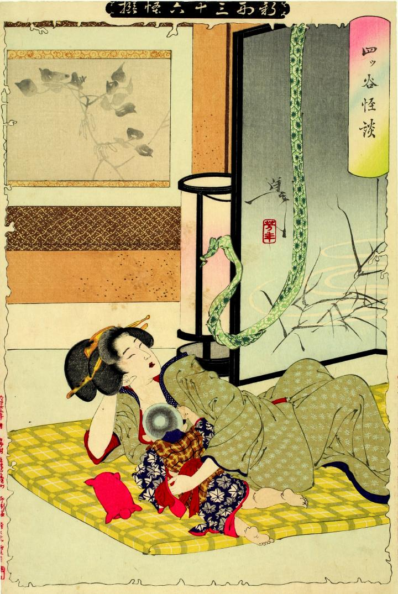

帯；オビ，蛇；ヘビ

子供に乳をやるお岩。天井から垂れ下がった帯が蛇のようにうねり彼女に迫っている。
著作者：芳年／出典：親書誌：U426_nichibunken_0071：四ツ谷怪談；ヨツヤカイダン／日付：2005／資源識別子：U426_nichibunken_0071_0001_0000
Copyright (c)2010- International Research Center for Japanese Studies, Kyoto, Japan. All rights reserved.